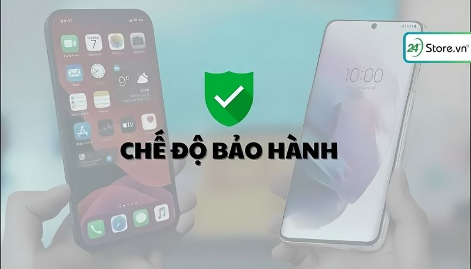

Nên mua iPhone cũ hay Android mới sẽ tốt hơn?
Nên mua iPhone Cũ hay Android mới là một vấn đề thu hút sự quan tâm của mọi người gần đây. Câu hỏi thà mua iPhone hơn Android liệu có đúng? Để có cái cái nhìn chi tiết, tổng quan hơn về hai dòng điện thoại này, cùng 24hStore tìm hiểu ưu điểm, nhược điểm của hai dòng điện thoại này nhé.
1. Nên mua iPhone cũ hay Android mới thì tốt hơn?
Việc nên mua iPhone cũ hay Android mới phụ thuộc vào nhiều yếu tố như nhu cầu sử dụng, ngân sách và sở thích cá nhân của bạn. Để chọn chiếc điện thoại phù hợp với ngân sách sở thích cùng xem bảng so sánh các đặc điểm trên từng dòng điện thoại iPhone và Android như sau:
| Đặc điểm | iPhone cũ | Android mới |
|---|---|---|
| Độ giữ giá | Mất 20% giá sau với giá lúc đầu mua. | Mất 50% giá sau 1 năm sử dụng. |
| Thiết kế | Ít sự thay đổi nhưng thiết kế tỉ mỉ, tối ưu sang trọng. | Đa dạng về mẫu mã, nhiều sự lựa chọn cho người dùng trong mức giá. |
| Trải nghiệm khi dùng | Tối ưu hóa hiệu năng so với phiên bản trước. | Nhấn mạnh cấu hình của thiết bị luôn được cải tiến. |
| Độ phổ biến | Để trải nghiệm iOS tốt hơn, người dùng phải mua thêm các linh kiện khác. | Đa dạng về phân khúc, dễ dàng người dùng chọn lựa. |
| Hệ điều hành mới | Được cập nhật liên tục. | Các bản cập nhật ít hơn nếu bạn không sử dụng dòng điện thoại Pixel của Google. |
| Chế độ bảo hành | Ở Việt Nam Apple không cung cấp chế độ bảo hành iPhone cũ. | Chế độ bảo hành chính hãng kéo dài từ 12-18 tháng phụ thuộc từng máy. |
| Linh kiện thay thế | Linh kiện chính hãng đa dạng dù trên các dòng đã ra đời từ lâu. | Việc tìm kiếm linh kiện trở nên khó khăn. |
| Sự tin tưởng | Chính sách hạn chế hàng xách tay và nguồn cung khan hiếm. | Vì mức giá dễ cạnh tranh nên nhiều nhà bán hàng sửa chữa rồi bán với mức giá rẻ nhưng độ bền thường không cao. |
2. So sánh iPhone cũ với Android mới chi tiết từ A đến Z
Để bạn dễ chọn về việc nên mua iPhone cũ hay Android mới cũng so sánh chi tiết các đặc điểm của hai dòng điện thoại này theo các yếu tố sau:
2.1. Độ giữ giá
Các dòng điện thoại Android hiện nay cho dù có mức giá tầm cao hay tầm thấp đều bị mất giá sau 1 năm sử dụng. Và giá trị của chúng giảm đi một nữa chỉ còn 50% giá so với giá lúc ban đầu mua. Đây là một điều khá là nan giải bạn nên xem xét trước khi mua.
Còn đối với điện thoại iPhone qua một năm sử dụng điện thoại chỉ mất đi 20% giá sao với số tiền bạn đã bỏ ra lúc đầu.
Điều này có nghĩa iPhone xuống giá chậm hơn so với thiết bị Android. Bởi những yếu tố như:
- Sự ổn định
- Sự phát hành các phiên bản
- Thương hiệu Apple mang lại sự tin tưởng cao
- Giá cao
2.2. Thiết kế Phone cũ với Android mới
Đối với dòng iPhone thiết kế không có sự thay đổi nhiều trong nhiều năm và trung bình cứ 2 năm sẽ có một sự thay đổi nhẹ đến từ Apple. Tuy nhiên đối với dòng Android thì ngược lại bởi vì luôn luôn có sự thay đổi về mẫu mã, kiểu dáng thiết kế.
Trên thực tế, thiết kế của iPhone không quá nổi bật so với thị trường smartphone hiện tại. Nhưng điều đặc biệt ở iPhone là khả năng cầm nắm thiết bị ở trên tay. Thiết kế cho người dùng trải nghiệm khả năng đầm, chắc bởi sự chăm chút tỉ mỉ, không có chi tiết thừa đến từ nhà sản xuất Apple.
2.3. Trải nghiệm khi dùng
Khi một sản phẩm mới tới từ nhà Apple được ra mắt, những thông tin về hiệu năng rất được khách hàng quan tâm so với thế hệ trước. Còn đối với thiết bị Android sẽ nhấn mạnh về thiết bị mang cấu hình nào và được trang bị những gì.
Không hiếm thấy những chiếc điện thoại Android mang cấu hình 6GB, 8GB,... với công suất từ 6 nhân cho tới 8 nhân. Nhưng Apple chỉ vẫn tiếp tục sử dụng công suất 2 nhân và ram cao nhất chỉ 2GB. Tuy vậy nếu so sánh về hiệu năng thì iPhone không hề lép vế so với Android.
2.4. Độ phổ biến
Những chiếc điện thoại iPhone của hãng Apple thường có giá bán cao hơn trung bình thị trường so với chiếc điện thoại chạy hệ điều hành khác. Để trải nghiệm tốt nhất trong hệ điều hành iOS, người dùng phải bỏ một số chi phí để mua thêm các phụ kiện khác.
Bên cạnh đó, điện thoại Android có tiếng về đa dạng mẫu mã mà giá phải chăng. Người dùng có thể thoải mái chọn các hãng mang hệ điều hành Android.
Ngoài ra, Để trải nghiệm hệ điều hành Android người dùng chỉ cần chỉ ra một số tiền nhỏ. Nền tảng Android được tối ưu hóa để chạy trên những thiết bị không có mức giá quá cao. Điều đó cho thấy Android được sử dụng phổ biến hơn.
2.5. Hệ điều hành mới
iOS nổi tiếng với tốc độ cập nhật nhanh chóng và liên tục, bao gồm cả bản vá lỗi và bản cập nhật lớn. Nhờ vậy, iPhone có thể sử dụng lâu hơn, thậm chí kể cả những model đã ra mắt hơn 8 năm như iPhone 6s/6s Plus vẫn nhận được cập nhật mới nhất.
Ngược lại, Android gặp nhiều khó khăn hơn trong việc cập nhật, đặc biệt là với các bản cập nhật lớn. Người dùng Android chỉ có thể mong đợi 3 - 4 bản cập nhật lớn trong vòng đời của thiết bị, trừ khi sử dụng dòng điện thoại Pixel của Google.
Lý do cho sự khác biệt này là do sự phân mảnh của hệ điều hành Android. Khi Google phát hành bản cập nhật mới, các hãng sản xuất điện thoại phải tùy chỉnh lại phiên bản đó trước khi có thể cập nhật cho thiết bị của họ. Quá trình này tốn thời gian và có thể dẫn đến sự chậm trễ trong việc cập nhật.

2.6. Chế độ bảo hành
Do Apple không bán điện thoại iPhone cũ trực tiếp tại Việt Nam, chế độ bảo hành phụ thuộc vào cửa hàng bán ra. Thông thường, iPhone cũ chỉ được bảo hành sửa chữa, không bao gồm đổi mới. Thời gian bảo hành khá ngắn, thường chỉ 6 tháng. Ngược lại, Android mới có nhiều ưu điểm về bảo hành nhưng lợi thế lớn nhất là có chế độ bảo hành chính hãng từ nhà sản xuất. Thời gian bảo hành thường kéo dài từ 12 đến 18 tháng, tùy hãng. Mang lại sự yên tâm cho người mua với chính sách đổi mới và sửa chữa rõ ràng.
2.7. Linh kiện thay thế
Linh kiện thay thế của iPhone dễ dàng tìm kiếm chính hãng và chất lượng cao như: pin, sạc, màn hình, vỏ... Việc thay thế linh kiện iPhone cũng đơn giản và tương thích tốt hơn. Nhờ được Apple hỗ trợ cập nhật phần mềm lâu dài, iPhone có thể sử dụng linh kiện thay thế trong thời gian dài. Trong khi đó, việc tìm kiếm linh kiện chính hãng trở nên khó khăn hơn. Người dùng có thể gặp vấn đề về sự tương thích giữa linh kiện thay thế và thiết bị. Hệ sinh thái Android phân mảnh với nhiều hãng sản xuất và dòng máy, dẫn đến sự đa dạng trong linh kiện và khó khăn trong việc tìm kiếm linh kiện phù hợp.
2.8. Sự tin tưởng
Bởi Apple có chính sách hạn chế hàng xách tay và nguồn cung cấp hàng khan hiếm dẫn đến chất lượng của iPhone bị giảm tăng các rủi ro khi sử dụng sản phẩm.
Chính vì sự khan hiếm nguồn hàng nên không thể nhập những chiếc điện thoại iPhone tốt mà các cửa hàng đã dựng lại iPhone để chuộc lợi, từ đó giảm một phần sự tin tưởng.
3. Nên mua iPhone cũ hay Android mới tại thời điểm này?
Việc nên mua iPhone cũ hay Android mới tại thời điểm này phụ thuộc vào nhiều yếu tố, bao gồm nhu cầu sử dụng, ngân sách và sở thích cá nhân của bạn. Hệ điều hành iOS có ưu điểm về sự ổn định, tốc độ cập nhật nhanh và bảo mật cao. Trong khi đó Android có ưu điểm là tính linh hoạt cao, phần cứng luôn được đổi mới liên tục.
Nếu bạn muốn một chiếc smartphone ổn định có sự bảo mật cao và nhận các bản cập nhật nhanh chóng iPhone đáp ứng được tiêu chí của bạn. Còn bạn muốn sử dụng một thiết bị có hiệu năng mạnh mẽ, pin trâu và muốn tùy chỉnh theo cá nhân hóa của mình Android sẽ phù hợp với bạn.
4. Vì sao iPhone cũ được ưa chuộng hơn so với Android mới?
Nhiều người dùng vẫn lựa chọn iPhone cũ thay vì Android mới, đặc biệt là khi ngân sách hạn hẹp.
Lý do iPhone cũ được ưa chuộng hơn so với Android mới:
- Chất lượng hoàn thiện và hiệu năng mạnh mẽ: iPhone nổi tiếng với độ bền cao và hiệu năng mượt mà, vượt trội so với các điện thoại Android giá rẻ.
- Hỗ trợ cập nhật phần mềm lâu dài: Apple hỗ trợ cập nhật phần mềm cho iPhone trong 5 - 6 năm, trong khi Android chỉ 2 - 3 năm.
- Tính năng cao cấp: iPhone cũ vẫn sở hữu những tính năng cao cấp như chống nước, sạc không dây, camera tốt... Tuy nhiên, iPhone cũ cũng có một số nhược điểm:
- Giá thành cao hơn so với Android cùng phân khúc.
- Có thể gặp rủi ro khi mua hàng cũ.
- Mẫu mã và tính năng không đa dạng như Android.
- Do đó, lựa chọn iPhone cũ hay Android mới phụ thuộc vào nhu cầu và ngân sách của bạn. Nếu bạn muốn sở hữu một chiếc điện thoại bền bỉ, hiệu năng mạnh mẽ, cập nhật phần mềm lâu dài và có những tính năng cao cấp, iPhone cũ là lựa chọn tốt. Tuy nhiên, nếu bạn muốn tiết kiệm chi phí và có nhiều lựa chọn về mẫu mã, tính năng, Android mới sẽ phù hợp hơn.
5. Giải đáp câu hỏi liên quan
Khi mua iPhone cũ hay Android mới bạn đang băn khoăn về máy nào chơi game tốt hơn, máy nào bền hơn cùng xem giải đáp thắc mắc dưới đây:
5.1. Nên mua iPhone cũ hay Android mới chơi game tốt hơn?
Lựa chọn điện thoại chơi game phù hợp là điều quan trọng để có trải nghiệm tốt nhất. Hai hệ điều đều có những ưu điểm và nhược điểm riêng cho game thủ.
Đối với điện thoại Android:
Ưu điểm:
- Giá thành đa dạng, phù hợp với nhiều đối tượng.
- Nhiều tính năng hỗ trợ chơi game như màn hình lớn, pin dung lượng cao, tần số quét cao, hệ thống tản nhiệt tốt.
- Kho ứng dụng Google Play Store phong phú với nhiều tựa game độc quyền.
Nhược điểm:
- Hiệu năng có thể không mạnh mẽ bằng iPhone.
- Một số game có thể không được tối ưu tốt cho Android.
- Vấn đề về virus và phần mềm độc hại.
Đối với điện thoại iPhone:
Ưu điểm:
- Hiệu năng mạnh mẽ, chơi game mượt mà, ổn định.
- Ít bị giật lag, khung hình ổn định.
- Nhiều game được tối ưu cho iOS.
Nhược điểm:
- Giá thành cao hơn Android.
- Ít tùy biến hơn Android.
- Kho ứng dụng App Store có thể hạn chế hơn Google Play Store.
Nếu bạn muốn tiết kiệm chi phí và cần nhiều tính năng hỗ trợ chơi game, Android là lựa chọn phù hợp. Nếu bạn muốn trải nghiệm chơi game mượt mà, ổn định, không ngại chi trả và thích sự đơn giản, iPhone là lựa chọn tốt.
5.2. Nên mua điện thoại iPhone cũ hay Android bền hơn?
Tùy vào thời lượng bạn sử dụng hệ điều hành. Tổng quan, khi khi nhắc đến Android phải nói đến tính linh hoạt cao về hệ điều hành và luôn có sự đổi mới liên tục. Còn về iPhone lại đề cao về sự ổn định, tính bảo mật, tốc độ truy cập.
Nếu bạn quan tâm tới tính ổn định, bảo mật, tốc độ truy cập nhanh thì chọn iPhone. Còn nếu bạn muốn dùng smartphone có hiệu năng mạnh, pin trâu và tự do điều chỉnh giao diện hãy chọn Android.
6. Mua iPhone cũ hay Android mới giá tốt nhất tại 24hStore
Khi bạn đã biết nên mua iPhone cũ hay Android ở mới rồi mà chưa biết đến cửa hàng nào uy tín. Đừng lo, khi bạn đến với 24hStore sẽ được tiếp đón với đội ngũ nhân viên được đào tạo bài bản, bán hàng tận tâm và sẵn sàng tư vấn cho bạn để bạn ưng ý khi đến với cửa hàng nhất. Ngoài ra, 24hStore còn có những nhân viên kỹ thuật kì cựu kinh nghiệm trong giới điện thoại hỗ trợ bạn mọi lúc mọi nơi.
Việc mua một chiếc smartphone giá cả phải chăng, thời gian sử dụng lâu dài đối với những người không rảnh về điện thoại là một vấn đề rất quan trọng. Và điện thoại iPhone cũ là giải pháp có thể đáp ứng hoàn toàn các yêu cầu này của người dùng. Đừng bỏ qua cơ hội mua iPhone nói chung và iPhone cũ nói riêng tại của hàng 24hStore nhé.
7. Kết luận
Mỗi chiếc smartphone đều có ưu điểm và nhược điểm riêng, nhưng đều được thiết kế để đáp ứng các nhu cầu của người dùng. Vì vậy, việc nên mua iPhone cũ hay Android mới phụ thuộc vào nhu cầu sử dụng cá nhân. Bài viết này đưa ra một cái nhìn tổng quan với nhiều góc độ khác nhau, nhằm giúp bạn đưa ra lựa chọn của riêng mình. Đừng quên theo dõi 24hStore để cập nhật mọi thứ mới nhất về công nghệ, tin tức hiện tại. Ngoài ra, nếu bạn muốn lên đời các dòng điện thoại iPhone với mức giá tốt và ưu đãi hấp dẫn hãy đến ngay các cửa hàng 24hStore gần nhất để trải nghiệm, mua sắm tuyệt vời nhé.